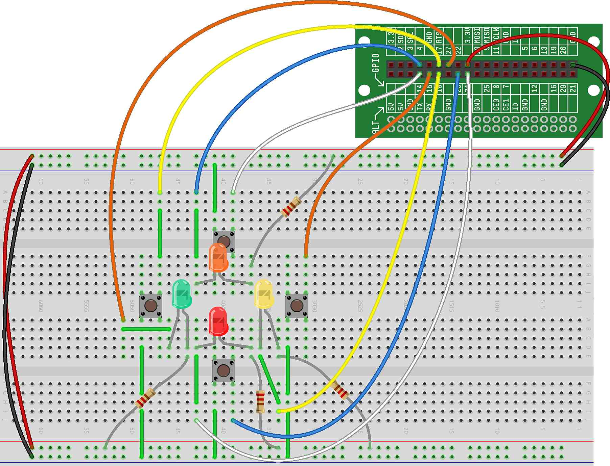

In this project, we continue the development of our Simon Says pattern-matching game by adding sound to our LED flashes.
The hardware setup for this project should be the same setup that was completed for the project. Here's a reminder: 
Here is what the code for this project should look like at this point (with new changes highlighted with arrows) — it should run similarly to the previous project, but with sound added:
Next, we need to insert our sounds into two locations — where we flash the sequence of LEDs for the player and where the player presses a button while repeating the sequence. Here is what those two code blocks should be updated to:
NEED CODE HERE
Here, we've added code to play sounds:
On Line 13, we initialize Notes()s, one note that
corresponds to each LED.
On Line 34, we play the note corresponding to the LED in the sequence.
At this line, we previously just paused with a time.sleep().
Now, we play the correct note for exactly the amount of time that we
previously were pausing.
On Lines 54 and 58, we play the note that corresponds to the button that was pressed. The first line we've added starts the note playing, and the second line stops it. This way, the note will play for the entire time the user has the button pressed.
The notes we've chosen are at a relatively low volume for the small speaker in the CREATOR Kit. Higher pitch notes will sound louder on the speaker. Try changing the pitch of all of the notes to the same notes two octaves higher.
When the user is trying to repeat the sequence, the notes will play for as long as the button is pressed. Instead, change the code to only play the note for exactly 0.4 seconds.
Instead of notes, change the code to use Speech() that
corresponds to the color of each led. That is, when you press the button
next to the red LED, have the speaker say the word "Red".
Instead of notes, change the code to use Sound(). You could
have an animal sound for each button. Some animal sounds available are:
"Meow.wav", "Horse.wav", "Rooster.wav", "Kitten.wav",
"Cricket.wav", "Dog1.wav", "Dog2.wav", "Goose.wav", "Owl.wav", "Bird.wav",
and "Duck.wav".